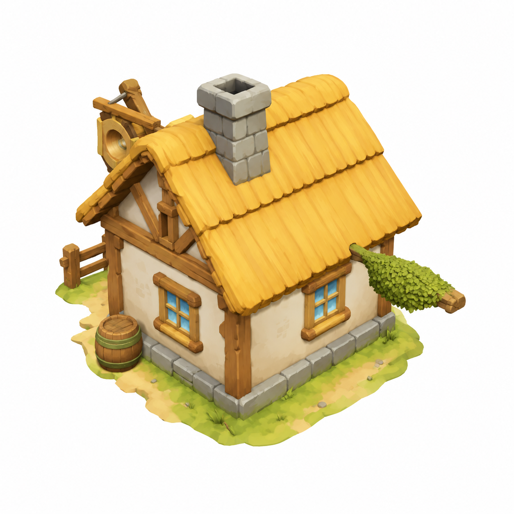

输入：gpt-image-2 按 fa_22 锚点生成的锯木厂概念图（白底单体）→ 本地 RTX 5060 8GB 推理 → 可交互 3D 模型（拖动旋转 / 滚轮缩放）
gpt-image-2 · 1024×1024 · rembg 自动抠底

形状 3.4s · 贴图烘焙 41s · 97,400 面OBJ + 2048 贴图（高模底模，需 Blender 减面）
开源第一梯队几何质量 · DiT 流匹配